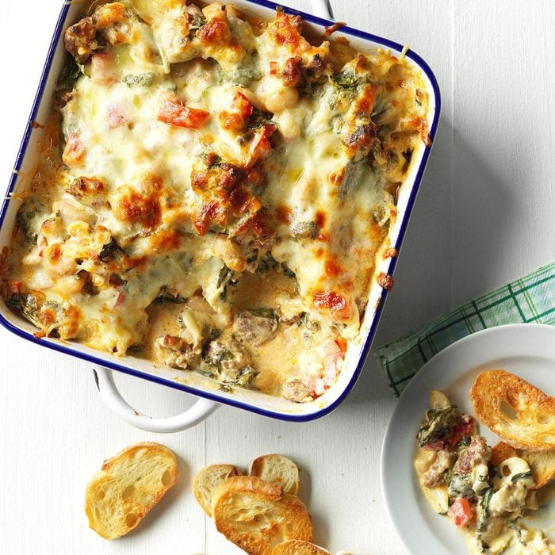

Tuscan Sausage & Bean Dip
Home

A delicious and easy-to-make appetizer that everyone will love.
Tuscan Sausage & Bean Dip is a hearty and flavorful dip that's perfect for
any party. It's made with Italian sausage, beans, cheese, and a variety of
herbs and spices. The dip is baked until bubbly and golden brown, and it's
served with your favorite dippers, such as crackers, bread, or vegetables.
Tuscan Sausage & Bean Dip is a delicious and easy-to-make appetizer that
everyone will love.
Ingredients
- 1 pound bulk hot Italian sausage
- 1 medium onion, finely chopped
- 4 garlic cloves, minced
- 1/2 cup dry white wine or chicken broth
- 1/2 teaspoon dried oregano
- 1/4 teaspoon salt
- 1/4 teaspoon dried thyme
- 1 package (8 ounces) cream cheese, softened
- 1 package (6 ounces) fresh baby spinach, coarsely chopped
- 1 can (15 ounces) cannellini beans, rinsed and drained
- 1 cup chopped seeded tomatoes
- 1 cup shredded part-skim mozzarella cheese
- 1/2 cup shredded Parmesan cheese
- Assorted crackers or toasted French bread baguette slices
- Preheat oven to 375°. In a large skillet, cook sausage, onion and garlic
over medium heat until sausage is no longer pink, breaking up sausage into
crumbles; drain. Stir in wine, oregano, salt and thyme. Bring to a boil;
cook until liquid is almost evaporated.
- Add cream cheese; stir until melted. Stir in spinach, beans and tomatoes;
cook and stir until spinach is wilted. Transfer to a greased 8-in.
square baking dish; if using an ovenproof skillet, leave in skillet.
Sprinkle with cheeses.
- Bake until bubbly, 20-25 minutes. Serve with crackers.